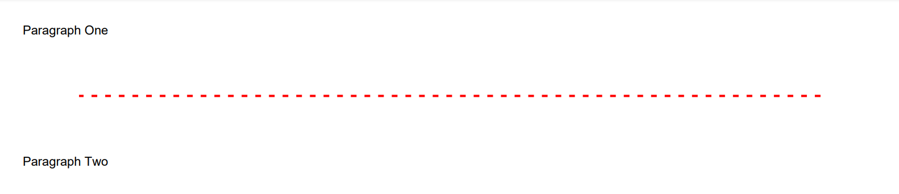
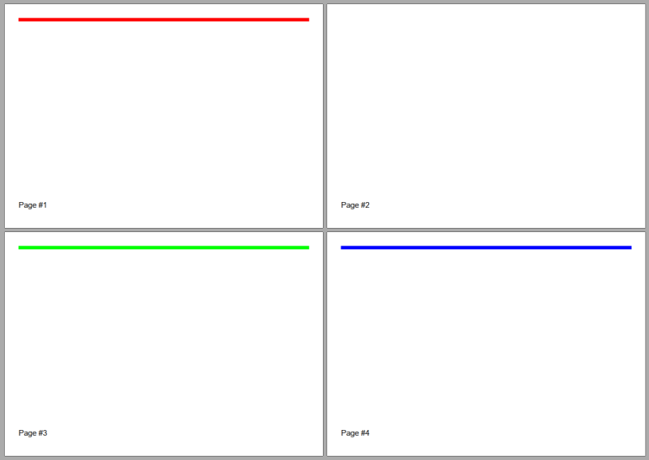

Adding Line
Brief
The article describes how to add and configure a line.
Details
You can add lines to a section and to a
repeating area using methods of the LineExtensions class
and configure line settings using methods of the LineBuilder class.
Each line has the following formatting:
Parameter |
Default value |
Methods for configuration |
Width |
|
|
Length |
Equal to the width of the available area |
|
Stroke style |
|
|
Color |
|
|
Alignment |
|
|
Margins - additional margins for a line |
No additional margins |
|
Page break |
No page break |
If you do not specify formatting settings for a line, they will have their default values defined by the default style.
You can create a style and apply it to all lines on the document, section, or repeating area level
using the method SetLineStyle and to particular lines using the method ApplyStyle.
For more on working with styles, see the article Formatting and Styles.
Vertical Lines
If you need to add a vertical line to a section or to a repeating area, you can do this
by specifying the necessary line width in the length parameter and the necessary line height in the
width parameter.
Page Break
When you need to place a line on a new page, insert a page break before the line using the method SetPageBreak().
If you call this method without the parameter, the line will be placed on the next page or remain on the current page if it is located at the beginning of the page.
You can specify the page on which the line will be placed in the method parameter. The available options are:
NextPage (the default page break) - the line is placed on the next page or remains on the current page if it is located at the beginning of the page.
NextEvenPage - the line is placed on the next even page or remains on the current page if it is located at the beginning of an even page.
NextOddPage - the line is placed on the next odd page or remains on the current page if it is located at the beginning of an odd page.
The available page breaks are listed in the PageBreak enumeration.
See Example 7 below for a code illustration.
See also
Examples
Example 1. Add a line between paragraphs (variant 1) [hide]
DocumentBuilder
.New()
.AddSection()
.AddParagraphToSection("Paragraph One")
.AddLine()
.SetColor(Color.Red)
.SetWidth(2)
.SetStroke(Stroke.Dashed)
.SetMargins(50)
.SetAlignment(HorizontalAlignment.Left).ToSection()
.AddParagraphToSection("Paragraph Two")
.ToDocument().Build("Result.pdf");
The above code will generate the following:

See the documentExample 1a. Add a line between paragraphs (variant 2) [show]
Example 2. Add a line with specified length, width, stroke style, and color. [hide]
DocumentBuilder.New()
.AddSection()
.AddLine(200, 4, Stroke.Dotted, Color.Green)
.SetAlignment(HorizontalAlignment.Center)
.ToDocument().Build("Result.pdf");
The above code will generate the following:
See the documentExample 3. Add a line with a default length [hide]
DocumentBuilder.New()
.AddSection()
.AddLine()
.ToDocument().Build("Result.pdf");
The above code will generate the following:
See the documentExample 4. Add a line with a default length and a specified stroke style [hide]
DocumentBuilder.New()
.AddSection()
.AddLine()
.SetWidth(1.5f)
.SetStroke(Stroke.Dashed)
.ToDocument().Build("Result.pdf");
The above code will generate the following:
See the documentExample 5. Add a vertical line [hide]
DocumentBuilder.New()
.AddSection()
.AddLine()
.SetMarginLeft(300f)
.SetWidth(200f)
.SetLength(2f)
.SetColor(Color.Red)
.ToDocument()
.Build("Result.pdf");
The above code will generate the following:
See the documentExample 6. Use vertical lines to separate vertical repeating areas [hide]
DocumentBuilder.New()
.AddSection()
.AddRptAreaLeftToBothPages(230)
.AddParagraph("BEST SCHOOL\n")
.SetAlignment(HorizontalAlignment.Center)
.SetFontSize(30)
.AddText("Since 1956")
.SetFontSize(10)
.ToArea()
.AddParagraph("School was established in 1956. Construction started in November 1955, "+
"and our school officially opened its doors to students on September 2, 1956.")
.SetMarginTop(20)
.ToSection()
.AddRptAreaLeftToBothPages(20)
// Add a vertical line:
.AddLine(2f, 200f, Stroke.Solid, Color.Gray)
.SetMargins(5)
.ToSection()
.AddRptAreaLeftToBothPages(230)
.AddParagraph("Welcome to our friendly family")
.SetAlignment(HorizontalAlignment.Center)
.SetFontSize(20)
.SetFontColor(Color.Gray)
.ToArea()
.AddParagraph("The Professional Learning Community at our school strives to meet the "+
"individual learning needs of every student so they can reach their "+
"highest level of academic achievement.")
.SetMarginTop(20)
.ToSection()
.AddRptAreaLeftToBothPages(20)
// Add a vertical line:
.AddLine(2f, 200f, Stroke.Solid, Color.Gray)
.SetMargins(5)
.ToSection()
.AddRptAreaLeftToBothPages(230)
.AddParagraph("We offer:")
.SetAlignment(HorizontalAlignment.Center)
.SetFontSize(16)
.ToArea()
.AddParagraph("Kindergarten").SetList()
.SetMarginTop(20)
.ToArea()
.AddParagraph("First-Sixth Grades").SetList()
.ToArea()
.AddParagraph("Fine Arts").SetList()
.ToArea()
.AddParagraph("Health and Physical Education").SetList()
.ToArea()
.AddParagraph("Library").SetList()
.ToDocument()
.Build("Result.pdf");
The above code will generate the following:
See the documentExample 7. Use lines with page breaks [hide]
.AddSection()
.SetSize(PaperSize.C6)
// This line has to be left at the same page:
.AddLine().SetColor(Color.Red).SetWidth(5)
.SetPageBreak(PageBreak.NextPage)
.ToSection()
// This line has to be started from page #3:
.AddLine().SetColor(Color.Green).SetWidth(5)
.SetPageBreak(PageBreak.NextOddPage)
.ToSection()
// This line has to be started from page #4:
.AddLine().SetColor(Color.Blue).SetWidth(5)
.SetPageBreak(PageBreak.NextEvenPage)
.ToSection()
.AddFooterToBothPages(20)
.AddParagraph()
.AddPageNumber("Page #")
.ToDocument()
The above code will generate the following:

See the document